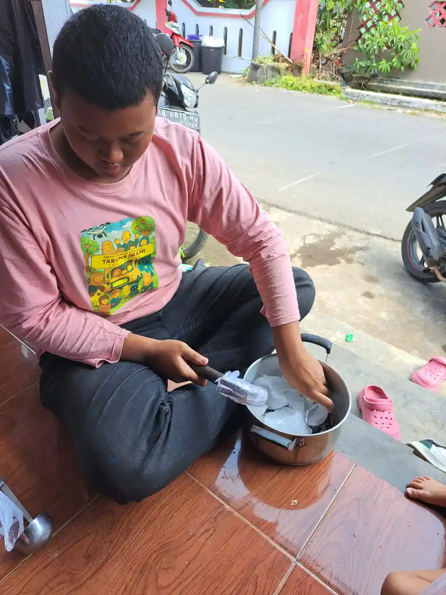

Tuna rungu wicara adalah kondisi ketika gangguan pendengaran ikut memengaruhi perkembangan atau kemampuan berbicara seseorang. Anak belajar bahasa dengan menerima bunyi, menghubungkan bunyi dengan makna, meniru, lalu memperbaiki ucapannya melalui interaksi. Jika akses terhadap bunyi terganggu, proses tersebut dapat berjalan lebih lambat atau membutuhkan jalur dukungan lain. Namun, tuna rungu tidak otomatis berarti anak tidak dapat berkomunikasi. Dengan pemeriksaan yang tepat, akses bahasa sejak dini, alat bantu bila sesuai, terapi, dan lingkungan yang responsif, anak dapat mengembangkan cara komunikasi yang bermakna.
Pengertian Tuna Rungu Wicara
Istilah tuna rungu wicara biasanya digunakan untuk menjelaskan gabungan antara gangguan pendengaran dan dampaknya pada kemampuan berbicara. Dampak tersebut tidak sama pada setiap anak. Ada anak yang mengalami gangguan dengar sejak lahir, ada yang mengalaminya setelah memiliki beberapa kata, dan ada yang kehilangan pendengaran secara bertahap. Waktu munculnya gangguan, derajat gangguan, kondisi kesehatan, akses pendidikan, dan dukungan keluarga akan memengaruhi perkembangan komunikasi.
Gangguan pendengaran dapat membuat anak tidak menangkap bagian tertentu dari ucapan. Bunyi dengan frekuensi tinggi, suara pelan, atau percakapan di ruangan bising mungkin lebih sulit dipahami. Anak lalu dapat terlihat tidak merespons panggilan, sering salah memahami instruksi, atau menggunakan gerak tubuh untuk menyampaikan keinginan. Perilaku tersebut bukan tanda anak tidak mau berkomunikasi. Bisa jadi anak sedang mencari cara yang paling mudah untuk mengakses informasi.
World Health Organization menjelaskan bahwa gangguan pendengaran dapat berdampak pada komunikasi, pendidikan, hubungan sosial, dan kesempatan kerja. Karena itu, tujuan pendampingan bukan hanya membuat anak mengucapkan kata sebanyak mungkin. Tujuannya adalah memastikan anak memahami dan dipahami, mampu meminta bantuan, menyampaikan pilihan, belajar, bermain, dan berpartisipasi dalam kehidupan sehari-hari.

Untuk mengenali istilah dan gambaran dasar lain, orang tua dapat membaca artikel tentang tuna rungu wicara yang membahas pengertian, derajat gangguan, skrining, dan pilihan penanganan. Bacaan tentang ciri-ciri anak berkebutuhan khusus juga dapat membantu keluarga menyusun pertanyaan sebelum berkonsultasi.
Perbedaan Tunarungu, Tunawicara, dan Tuna Rungu Wicara
Ketiga istilah ini sering digunakan bergantian, padahal fokusnya berbeda. Tunarungu merujuk pada gangguan fungsi pendengaran. Tunawicara merujuk pada hambatan pada produksi bicara, yang dapat terjadi meskipun pendengaran seseorang baik. Tuna rungu wicara menggambarkan gangguan pendengaran yang berdampak pada perkembangan atau kemampuan bicara.
| Istilah | Fokus utama | Hal yang perlu dipahami |
|---|---|---|
| Tunarungu | Akses terhadap suara dan pendengaran | Tidak selalu berarti seseorang tidak dapat berbicara. |
| Tunawicara | Produksi suara atau kelancaran bicara | Penyebabnya beragam dan tidak selalu berkaitan dengan pendengaran. |
| Tuna rungu wicara | Gangguan dengar yang berdampak pada bicara | Dukungan perlu mencakup akses bahasa, komunikasi, dan lingkungan. |
Bahasa isyarat juga perlu dipandang sebagai bahasa, bukan sekadar alat bantu sementara. Sebagian keluarga memilih komunikasi lisan, sebagian menggunakan bahasa isyarat, dan sebagian memakai komunikasi total yang menggabungkan suara, isyarat, tulisan, gambar, serta gerak. Pilihan tersebut sebaiknya didasarkan pada kebutuhan anak dan akses komunikasi yang benar-benar dapat digunakan, bukan pada tekanan agar semua anak berkomunikasi dengan cara yang sama.
Orang tua yang ingin memahami kondisi pendengaran secara lebih spesifik dapat membaca penjelasan tentang peluang pemulihan gangguan pendengaran. Jika keluarga juga sedang mempertimbangkan sekolah, panduan pendidikan inklusi dapat menjadi bahan awal untuk berdiskusi dengan sekolah.
Penyebab dan Faktor Risiko
Penyebab tuna rungu wicara dapat muncul pada berbagai tahap kehidupan. Faktor genetik dapat menyebabkan gangguan pendengaran bawaan atau gangguan yang baru tampak kemudian. Infeksi tertentu selama kehamilan, komplikasi kelahiran, berat badan lahir rendah, dan kondisi bayi setelah lahir juga dapat meningkatkan risiko. Pada masa kanak-kanak, infeksi telinga berulang, meningitis, cedera kepala, paparan suara keras, dan obat yang bersifat ototoksik perlu diperhatikan.
Gangguan pendengaran konduktif terjadi ketika suara terhambat melewati telinga luar atau telinga tengah. Penumpukan serumen, cairan di telinga tengah, atau infeksi dapat menjadi contoh. Gangguan sensorineural terjadi ketika masalah berada di telinga dalam atau saraf pendengaran. Ada juga gangguan campuran, yaitu gabungan keduanya. Masing-masing jenis memerlukan pemeriksaan dan penanganan yang berbeda.
WHO menyebut banyak penyebab gangguan pendengaran pada anak dapat dicegah atau ditangani lebih awal. Pencegahan bukan berarti keluarga harus merasa bersalah ketika anak mengalami gangguan pendengaran. Informasi pencegahan berguna untuk mendorong imunisasi, pemeriksaan ibu dan bayi, penanganan infeksi telinga, penggunaan obat sesuai resep, serta kebiasaan mendengar yang aman.
Jangan mendiagnosis penyebab hanya dari perilaku anak. Anak yang sering meminta pengulangan bisa mengalami gangguan pendengaran, tetapi bisa juga mengalami kesulitan memproses bahasa, berada di lingkungan yang bising, atau belum memahami instruksi. Pemeriksaan dokter THT dan audiolog membantu membedakan kemungkinan tersebut. Untuk rujukan kesehatan pendengaran, baca lembar fakta WHO tentang gangguan pendengaran.
Tanda yang Perlu Diperhatikan
Tanda tuna rungu wicara dapat berbeda sesuai usia. Pada bayi, keluarga dapat memperhatikan apakah bayi terkejut terhadap suara keras, menoleh ke arah suara, mengoceh, dan bereaksi terhadap suara orang yang dekat. Pada anak yang lebih besar, beberapa tanda mungkin tampak saat anak tidak berada dalam pandangan pembicara.
- Tidak menoleh ketika dipanggil, terutama dari belakang atau dari ruangan lain.
- Lebih mudah mengikuti instruksi jika melihat wajah dan gerak tubuh orang yang berbicara.
- Sering meminta orang lain mengulang ucapan atau menjawab tidak sesuai pertanyaan.
- Volume televisi atau perangkat digital jauh lebih keras daripada anggota keluarga lain.
- Ucapan anak sulit dipahami atau perkembangan kosakatanya tidak bertambah sesuai harapan.
- Lebih sering menunjuk, menarik tangan orang dewasa, atau menangis karena kesulitan menyampaikan kebutuhan.
- Tampak cepat lelah setelah mengikuti percakapan di ruangan ramai.
- Memiliki riwayat infeksi telinga berulang atau cairan keluar dari telinga.
Satu tanda tidak cukup untuk menyimpulkan diagnosis. Namun, beberapa tanda yang muncul bersamaan merupakan alasan yang baik untuk melakukan pemeriksaan. Menunggu terlalu lama dapat membuat anak kehilangan waktu penting untuk mendapatkan bahasa. Hasil pemeriksaan yang normal juga membantu keluarga mencari kemungkinan lain dengan lebih terarah.
Pemeriksaan dan Skrining Pendengaran
Skrining pendengaran bertujuan menemukan kemungkinan gangguan, bukan menggantikan diagnosis. Pada bayi, pemeriksaan yang umum adalah otoacoustic emissions atau OAE dan auditory brainstem response atau ABR. Keduanya dapat dilakukan ketika bayi tidur dan tidak menimbulkan rasa sakit. Jika hasil skrining perlu ditindaklanjuti, dokter atau audiolog akan menyarankan pemeriksaan lanjutan.
National Institute on Deafness and Other Communication Disorders atau NIDCD menyarankan agar pendengaran bayi diskrining sedini mungkin. Keluarga dapat membaca panduan NIDCD tentang skrining pendengaran bayi untuk memahami tahapan pemeriksaan. Anak yang lebih besar mungkin menjalani audiometri, pemeriksaan telinga, tes pemahaman suara, atau pemeriksaan lain sesuai usia dan kemampuan mengikuti instruksi.
Catatan penting untuk orang tua
Hasil skrining yang tidak lolos bukan berarti anak pasti tuli. Cairan di telinga, bayi yang bergerak, atau kondisi ruangan dapat memengaruhi hasil. Yang penting adalah mengikuti pemeriksaan ulang atau rujukan yang diberikan, bukan mengabaikannya karena khawatir atau merasa sudah cukup melihat respons anak di rumah.
Catat hal yang diamati sebelum konsultasi. Misalnya, kapan anak tidak merespons, apakah lebih mudah mengikuti percakapan dalam suasana tenang, riwayat infeksi, obat yang pernah dikonsumsi, dan perubahan kemampuan bicara. Catatan tersebut dapat membantu dokter memahami pola masalah. Jangan memasukkan benda ke telinga anak dan jangan memberikan obat atau suplemen untuk gangguan pendengaran tanpa arahan tenaga kesehatan.
Untuk keluarga yang juga melihat keterlambatan komunikasi, pemeriksaan pendengaran sebaiknya dilakukan sebelum menyimpulkan bahwa anak mengalami speech delay karena faktor lain. Pendamping dapat membaca artikel terapi wicara untuk anak sebagai gambaran umum, lalu mendiskusikan kebutuhan anak dengan tenaga profesional.
Dukungan Bahasa dan Terapi
Setelah kondisi pendengaran dipahami, keluarga dan tim pendamping dapat menyusun tujuan komunikasi. Tujuan pertama biasanya bukan mengejar pelafalan yang sempurna, melainkan membuat anak memiliki cara yang konsisten untuk meminta, menolak, memilih, menjawab, bercerita, dan ikut dalam percakapan. Kemampuan tersebut dapat dibangun melalui suara, bahasa isyarat, tulisan, gambar, atau kombinasi yang sesuai.
Terapi wicara dapat mencakup latihan mendengar, membedakan bunyi, memahami bahasa, memperluas kosakata, menyusun kalimat, mengatur suara, dan berlatih bergiliran. Jika anak menggunakan alat bantu dengar atau implan koklea, terapi dapat membantu anak memahami bunyi yang baru diakses. Alat bantu tidak menggantikan interaksi. Anak tetap membutuhkan orang dewasa yang sabar, responsif, dan mau menunggu jawabannya.
Latihan di rumah dapat dilakukan dalam kegiatan sederhana. Orang tua bisa mengomentari apa yang sedang dilakukan, menggunakan kalimat pendek yang jelas, mengulang kata kunci, memberi jeda setelah pertanyaan, dan memakai gestur atau gambar. Matikan suara televisi yang tidak ditonton agar anak tidak perlu bekerja terlalu keras untuk memisahkan suara penting dari kebisingan. Pendekatan yang melibatkan orang tua dalam rutinitas sehari-hari juga dibahas dalam Hanen Approach untuk dukungan bahasa anak.
Jika anak memiliki kebutuhan lain, terapi wicara dapat berjalan berdampingan dengan dukungan okupasi, fisioterapi, psikologi, atau pendidikan khusus. Panduan macam-macam terapi pada anak dapat membantu keluarga mengenali tujuan tiap layanan. Hindari membandingkan hasil anak dengan anak lain. Kemajuan yang penting adalah anak semakin mampu memahami, menyampaikan maksud, dan terlibat dalam kegiatan yang bermakna.

Dukungan Pendidikan dan Lingkungan
Sekolah yang mendukung anak tuna rungu wicara tidak hanya mengandalkan kemampuan anak untuk menyesuaikan diri. Lingkungan belajar juga perlu menyesuaikan cara penyampaian informasi. Guru dapat memastikan wajah terlihat ketika berbicara, memberikan instruksi tertulis, memakai gambar atau demonstrasi, mengurangi kebisingan, dan memeriksa pemahaman anak tanpa mempermalukannya.
Akomodasi dapat berbeda untuk setiap anak. Ada yang membutuhkan tempat duduk di bagian depan, catatan pelajaran, waktu tambahan untuk memproses instruksi, juru bahasa isyarat, sistem mikrofon tertentu, atau komunikasi melalui papan tulis dan aplikasi. Sekolah, keluarga, dan tenaga profesional perlu membuat kesepakatan tertulis tentang dukungan tersebut lalu meninjaunya secara berkala.
Orang tua dapat menggunakan panduan memilih sekolah inklusi sebagai bahan diskusi. Perhatikan apakah sekolah terbuka terhadap komunikasi visual, memiliki guru yang mau belajar kebutuhan anak, dan bersedia bekerja sama dengan keluarga. Pendidikan inklusi bukan sekadar menempatkan anak di kelas yang sama. Anak perlu dapat mengakses materi, berinteraksi, merasa aman, dan menunjukkan kemajuan.
Program pembelajaran individual juga dapat membantu ketika target dan dukungan anak perlu dirinci. Lihat panduan program pembelajaran individual untuk memahami pentingnya tujuan yang konkret, cara memantau kemajuan, dan kerja sama antara guru serta keluarga.
Langkah Praktis untuk Orang Tua
- Catat kekhawatiran secara spesifik. Tuliskan situasi, suara, atau instruksi yang sulit diikuti anak, bukan hanya label seperti anak tidak fokus.
- Jadwalkan pemeriksaan pendengaran. Mulai dari fasilitas kesehatan yang dapat memberi rujukan ke dokter THT dan audiolog.
- Pastikan anak memiliki akses bahasa. Diskusikan pilihan komunikasi yang paling mudah dipahami dan digunakan anak.
- Susun latihan kecil dalam rutinitas. Gunakan makan, mandi, bermain, membaca, dan perjalanan sebagai kesempatan berkomunikasi.
- Bicarakan akomodasi dengan sekolah. Mintalah dukungan yang dapat diamati, misalnya instruksi tertulis, posisi duduk, atau materi visual.
- Evaluasi secara berkala. Catat perubahan yang terlihat dan sampaikan kepada tim agar strategi dapat disesuaikan.
Keluarga tidak harus menjalani proses ini sendirian. YUKA berfokus pada pendidikan inklusi dan pendampingan anak berkebutuhan khusus. Orang tua dapat mempelajari program pendidikan dan pendampingan YUKA atau membaca informasi donasi pendidikan ABK untuk memahami dukungan yang tersedia bagi anak dan keluarga.
Pertanyaan yang Sering Diajukan
Apa yang dimaksud dengan tuna rungu wicara?
Tuna rungu wicara adalah kondisi ketika gangguan pendengaran berdampak pada perkembangan atau kemampuan berbicara seseorang. Dampaknya bergantung pada waktu muncul, derajat gangguan, akses bahasa, alat bantu, dan dukungan yang diterima.
Apakah anak tuna rungu pasti tidak bisa berbicara?
Tidak. Kemampuan berbicara anak sangat beragam. Anak dapat mengembangkan komunikasi lisan, bahasa isyarat, komunikasi total, atau kombinasi beberapa cara. Pemeriksaan pendengaran dan akses bahasa sejak dini membantu keluarga memilih dukungan yang sesuai.
Apa penyebab tuna rungu wicara pada anak?
Penyebabnya dapat berasal dari faktor genetik, infeksi saat kehamilan, komplikasi kelahiran, infeksi telinga, meningitis, paparan suara keras, cedera, atau obat yang berdampak pada telinga. Pemeriksaan dokter THT dan audiolog diperlukan untuk mencari penyebabnya.
Kapan anak perlu diperiksa pendengarannya?
Pemeriksaan dapat dilakukan kapan saja ketika ada kekhawatiran. Bayi sebaiknya menjalani skrining pendengaran sedini mungkin, dan anak yang tidak merespons suara, tidak menoleh saat dipanggil, atau mengalami keterlambatan bicara perlu diperiksa tanpa menunggu terlalu lama.
Apakah terapi wicara dapat membantu anak tuna rungu?
Terapi wicara dapat membantu kemampuan mendengar, memahami bahasa, memproduksi bunyi, memperluas kosakata, dan berkomunikasi. Hasilnya lebih baik bila terapi berjalan bersama akses bahasa yang jelas dan latihan komunikasi dalam rutinitas keluarga.
Bagaimana sekolah mendukung anak tuna rungu wicara?
Sekolah dapat memberi instruksi tertulis dan visual, memastikan wajah guru terlihat, mengurangi kebisingan, memberi waktu pemrosesan, menyediakan pendamping atau juru bahasa bila diperlukan, serta menilai kemajuan anak dengan cara yang aksesibel.
Sumber Resmi dan Referensi
- World Health Organization, Deafness and hearing loss
- World Health Organization, World report on hearing
- NIDCD, Your Baby's Hearing Screening and Next Steps
- NIDCD, Hearing aids
- ASHA, Degree of Hearing Loss
- Peraturan Pemerintah Nomor 13 Tahun 2020
Catatan: Artikel ini bersifat edukatif dan tidak menggantikan pemeriksaan serta diagnosis dokter THT, audiolog, atau terapis yang menangani anak.